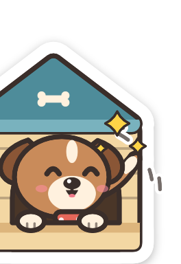
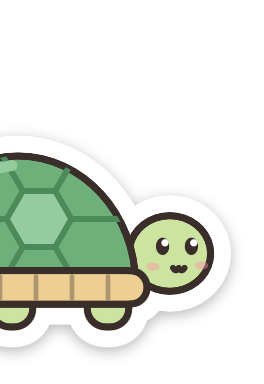

Confiez-le au chat. Reprenez-le plus tard.
PawShelf est une étagère pour votre Mac. Un petit personnage pointe le bout de son nez au bord de l’écran et garde fichiers, dossiers, images, liens et textes pendant que vous passez d’une app à l’autre.
Bientôt sur le Mac App Store
Pour macOS 14 ou version ultérieure, sur les Mac avec puce Apple ou processeur Intel.
Comment ça marche

Déposez-le sur l’onglet
Faites glisser n’importe quoi sur le personnage au bord de l’écran. Trop loin du bord ? Secouez le pointeur pendant le glissement et l’étagère s’ouvre juste à côté.

Continuez votre travail
Changez d’app, de Space ou de fenêtre en plein écran. L’onglet reste au bord, et vos éléments sont toujours là après un redémarrage.

Faites-le glisser dehors
Déposez les éléments dans le Finder, Mail, une discussion ou un formulaire d’envoi. Sélectionnez-en plusieurs pour les sortir ensemble.
Choisissez qui garde vos affaires
Douze personnages, chacun avec sa façon de garder les choses. Certaines habitudes sont vraiment utiles : les joues du hamster montrent à quel point l’étagère est pleine, l’écureuil signale les éléments oubliés et la glace du pingouin fait fondre ceux dont vous n’avez plus besoin.
-


Chaton carton
Cache vos affaires dans un carton
-


Hamster joufflu
Ses joues gonflent à mesure que l’étagère se remplit
-


Écureuil à glands
Se souvient des glands oubliés et propose un rangement
-


Pingouin des glaces
Met vos affaires au frais jusqu’à ce qu’elles fondent
-


Hibou noctambule
Bien réveillé la nuit, endormi le jour
-


Pie scintillante
Collectionne les liens et images qui brillent
-


Chien rapporteur
Vous rapporte vos affaires quand vous en avez besoin
-


Kangourou à poche
Garde vos affaires à l’abri dans sa poche
-


Pélican
Ouvre grand son bec pour attraper ce que vous déposez
-


Pieuvre à huit bras
Tient un objet dans chaque bras
-


Taupe fouisseuse
Range vos affaires dans son terrier
-


Tortue à carapace
Protège vos affaires sous sa carapace
Survolez un autocollant pour dire bonjour.
Tout ce qu’une étagère doit savoir faire
Historique du presse-papiers
Vos 50 dernières copies, directement sur l’étagère. Les copies que les gestionnaires de mots de passe marquent comme privées ne sont jamais enregistrées.
Collecter les nouveaux fichiers
Choisissez un dossier comme Captures d’écran ou Téléchargements, et les nouveaux fichiers arrivent tout seuls sur l’étagère.
Rechercher dans les images
Retrouvez une capture d’écran grâce aux mots qu’elle contient. Le texte est reconnu sur votre Mac.
Titres et icônes des liens
Les liens affichent le titre et l’icône de la page, pas seulement une adresse.
Retirés récemment
Retiré par erreur ? Récupérez-le depuis le menu ⋯ de l’étagère.
Aperçu et partage
Appuyez sur la barre d’espace pour Coup d’œil, ou envoyez des éléments par AirDrop et Messages.
Collections
Regroupez les éléments liés en collections et affichez-en une à la fois.
Sur tous les Spaces
L’onglet vous suit sur tous les Spaces et reste au-dessus des apps en plein écran, sur le bord gauche ou droit.
Prêt pour VoiceOver
Chaque bouton et chaque élément de l’étagère a une étiquette VoiceOver.
Rien à autoriser dans les Réglages Système
PawShelf ne demande ni l’accès Accessibilité ni l’enregistrement de l’écran. Il fonctionne dans l’App Sandbox et n’ouvre que ce que vous lui confiez. Ce que vous posez sur l’étagère reste sur votre Mac.